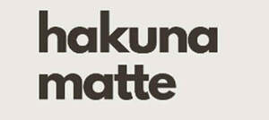

Trade Mark Journal No.2025/030 25 July 2025
UK00004230457 8 July 2025 (24,27,28,35)
Mark 1
HAKUNA MATTE
Mark 2

- Class 24
- Textiles and textile goods; Bed and table covers; Travellers’ rugs, textiles for making articles of clothing; Duvets; Covers for pillows, cushions or duvets; Picnic blankets; Cotton blankets; Baby blankets; Sofa blankets; Blanket throws; Travelling blankets; Quilted blankets [bedding]; Receiving blankets; Woollen blankets; Woolen blankets; Swaddling blankets; Bed blankets; Blankets (Bed -); Travellers' rugs; Travelling rugs; Travelling rugs [lap robes]; Tartan travelling rugs; Textiles and substitutes for textiles; Textile handkerchieves; Textiles for food wrapping; Textiles for furnishings; Textiles for upholstery; Textile material; Material (Textile -); Hand towels of textile; Handkerchiefs of textiles; Handkerchiefs of textile; Fabric; Fabrics; Chemical fiber fabrics; Embroidery fabric; Upholstery fabrics; Water resistant fabrics; Chenile fabric; Polyester fabric; Industrial fabrics; Polyester textiles; Nylon fabric; Rayon fabric; Viscose fabric; Cotton fabrics; Cotton fabric; Cotton cloths; Cotton towels; Hemp fabric; Hemp cloth; True hemp fabrics; Hemp yarn fabrics.
- Class 27
- Carpets, rugs, mats and matting, linoleum and other materials for covering existing floors; Wall hangings (non-textile); Wallpaper; Mats; Rugs; Bathroom rugs; Rugs (Floor -); Underlays for rugs; Prayer rugs; Area rugs; Rugs for animals; Wrestling mats; Gymnasium mats; Bathroom mats; Underlay for mats; Gymnastic mats; Non-slip mats; Floor mats; Rubber mats; Runners [mats]; Anti-fatigue floor mats; Tatami mats; Prayer mats; Floor mats for automobiles; Gymnasium exercise mats; Carpets; Carpets for automobiles; Automobile carpets; Carpet underlining; Carpet underlay; Carpet underlays; Underlay for carpets; Carpets [textile]; Moquettes [carpets]; Floor coverings; Coverings (Floor -); Floor coverings [for existing floors]; Linoleum floor coverings; Vinyl floor coverings for existing floors.
- Class 28
- Games and playthings; Playing cards; Gymnastic and sporting articles; Decorations for christmas trees; Childrens’ toy bicycles; Puzzle mats [toys]; Puzzles; Jigsaw puzzles; Manipulative puzzles; Cube-type puzzles; Puzzle board games; Mosaic puzzles; Cube puzzles; Manipulative logic puzzles; Puzzles [toys]; Toys in the form of puzzles; Chess pieces; Play mats for the purpose of putting together puzzles; Jungle gyms [play equipment]; Gym balls; Gym balls for yoga; Fitness exercise machines; Exercise treadmills; Gym chalk for improving hand grip in sports activities; Baby gyms; Play figures; Play houses; Role play games; Play money; Volleyball game playing equipment; Balls for playing games; Marbles for playing games; Playing balls; Balls for play; Play balls; Billiard game playing equipment; Play tunnels; Play frames.
- Class 35
- Advertising; Publicity services; Marketing services; Digital marketing services; Promotional services; Commercial information services; Business information services; Business research services; Auditing services; Social media marketing, Advertising and promotional services; Business management; Office functions; Business advice; Retail, online retail, wholesale services in relation to the sale of Textiles and textile goods, Bed and table covers, Travellers’ rugs, textiles for making articles of clothing, Duvets, Covers for pillows, cushions or duvets, Picnic blankets, Cotton blankets, Baby blankets, Sofa blankets, Blanket throws, Travelling blankets, Quilted blankets [bedding], Receiving blankets, Woollen blankets, Woolen blankets, Swaddling blankets, Bed blankets, Blankets (Bed -), Travellers' rugs, Travelling rugs, Travelling rugs [lap robes], Tartan travelling rugs, Textiles and substitutes for textiles, Textile handkerchieves, Textiles for food wrapping, Textiles for furnishings, Textiles for upholstery, Textile material, Material (Textile -), Hand towels of textile, Handkerchiefs of textiles, Handkerchiefs of textile, Fabric, Fabrics, Chemical fiber fabrics, Embroidery fabric, Upholstery fabrics, Water resistant fabrics, Chenile fabric, Polyester fabric, Industrial fabrics, Polyester textiles, Nylon fabric, Rayon fabric, Viscose fabric, Cotton fabrics, Cotton fabric, Cotton cloths, Cotton towels, Hemp fabric, Hemp cloth, True hemp fabrics, Hemp yarn fabrics, Carpets, rugs, mats and matting, linoleum and other materials for covering existing floors, Wall hangings (non-textile), Wallpaper, Mats, Rugs, Bathroom rugs, Rugs (Floor -), Underlays for rugs, Prayer rugs, Area rugs, Rugs for animals, Wrestling mats, Gymnasium mats, Bathroom mats, Underlay for mats, Gymnastic mats, Non-slip mats, Floor mats, Rubber mats, Runners [mats], Anti-fatigue floor mats, Tatami mats, Prayer mats, Floor mats for automobiles, Gymnasium exercise mats, Carpets, Carpets for automobiles, Automobile carpets, Carpet underlining, Carpet underlay, Carpet underlays, Underlay for carpets, Carpets [textile], Moquettes [carpets], Floor coverings, Coverings (Floor -), Floor coverings [for existing floors], Linoleum floor coverings, Vinyl floor coverings for existing floors, Games and playthings, Playing cards, Gymnastic and sporting articles, Decorations for christmas trees, Childrens’ toy bicycles, Puzzle mats [toys], Puzzles, Jigsaw puzzles, Manipulative puzzles, Cube-type puzzles, Puzzle board games, Mosaic puzzles, Cube puzzles, Manipulative logic puzzles, Puzzles [toys], Toys in the form of puzzles, Chess pieces, Play mats for the purpose of putting together puzzles, Jungle gyms [play equipment], Gym balls, Gym balls for yoga, Fitness exercise machines, Exercise treadmills, Gym chalk for improving hand grip in sports activities, Baby gyms, Play figures, Play houses, Role play games, Play money, Volleyball game playing equipment, Balls for playing games, Marbles for playing games, Playing balls, Balls for play, Play balls, Billiard game playing equipment, Play tunnels, Play frames.
HM Hamburg Merchants GmbH
Representative: Trade Mark Wizards Limited